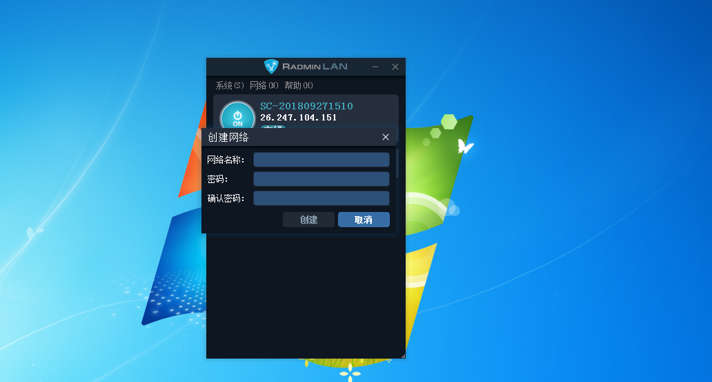

远程搭建虚拟局域网(VLAN)
2023.7.11
用第三方软件搭建虚拟局域网，简单快捷，做到远程联机局域网游戏与通过局域网远程传输文件。只要游戏支持局域网联机，无论正版盗版都能实现远程联机，前提是游戏版本一致，例如红警，我的世界，无主之地。
Radmin LAN

Redmin LAN免费，高速，安全。用它来建立虚拟局域网是目前最佳的选择。
https://www.radmin-lan.cn/
使用教程
从上边的网页中下载并安装Redmin VPN
打开软件，页面如下
点击主页面顶部栏的“网络”，页面弹出“创建网络”与“加入网络”，选择创建网络
网络名称选择易记易打有特殊性的英文或数字，方便另一人输入，不允许有中文。密码与网络名称的命名规则一样。输入完毕后，点击创建。提醒：最好关闭防火墙进行此操作。与其一同加入虚拟局域网的人，选择顶部栏的网络，点击加入网络，输入主机方设置的名称与密码，点击加入即可。
打开游戏的局域网联机页面，主机端创建局域网游戏，另一方搜索游戏后选择加入游戏，大功告成。然后就可以愉快的玩游戏啦，远程桌面与远程文件传输同理。
上一篇
下一篇